cmepy.model¶
Overview¶
CmePy represents systems of reactions as data structures called models. At a basic level, a model describes the reactions in the system, in terms of the reaction propensities, as functions of the system state, and the transitions between states caused by the reactions.
A model implicitly depends upon the coordinate system used for the state space. Typical choices of state space coordinate systems are the occurance counts of reactions in the system, or the copy counts of species. In principle, it does not matter how the state space is defined, as long as the reaction propensities can be computed as functions of the state. However, choosing a coordinate system that leads to a higher-dimensional state space may result in a model that is computationally difficult, or impossible, to solve.
Models often store optional parameters describing the shape of the state space, and the coordinates of the initial state. The shape of a model is used to define a rectangular region of states that are considered by the solver when computing the solution to the Chemical Master Equation, while the initial state specifies an initial (deterministic) system configuration.
Note
CmePy also supports a limited form of time-dependence for propensity functions. See Time-dependent propensity functions.
Non-rectangular state spaces may also be defined, see Sparse state spaces.
Stochastic initial system configurations may be specified by explicitly passing an initial probability distribution as the p_0 keyword argument to the cmepy.solver.create() function, when creating a solver. See cmepy.solver.
Creating a model¶
Model objects are created by calling the function cmepy.model.create(). Model parameters are be passed as keyword arguments to this function. The general format for defining a model m is:
from cmepy import model
m = model.create(
propensities = (
# define propensity functions here
),
transitions = (
# define reaction transitions here
),
# define any optional model parameters here
)
Model objects are instances of the cmepy.model.Model class, which is a subclass of Python dictionary type (the dict class). The cmepy.model.Model adds two methods to the usual methods provided by Python’s dict class. These are:
- a validate() method, which checks the structure of the model and raises an exception if something is obviously wrong with the supplied parameters. This method is automatically called when the model is initialised.
- an overloaded __getattribute__() method, which allows parameters stored in the model to be accessed as attributes. For example, the propensities parameter of a model m may be accessed in the usual dictionary lookup fashion as m['propensities'], or as an attribute, via m.propensities.
Required model parameters¶
Every model must be defined with propensities and transitions
parameters. These parameters are supplied as keyword arguments to the
cmepy.model.create() function. These two parameters must be sequences
(e.g. lists or tuples) of the same length. The  -th reaction in the
system is defined by the pair of -th items from the propensities
and transitions sequences.
Explicitly, the probability distribution for the system of reactions is evolved
by the Chemical Master Equation using the propensities and transitions
parameters as follows:
-th reaction in the
system is defined by the pair of -th items from the propensities
and transitions sequences.
Explicitly, the probability distribution for the system of reactions is evolved
by the Chemical Master Equation using the propensities and transitions
parameters as follows:
At time, the
, and into the state 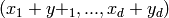, at a rate equal to 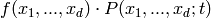,
- where
- 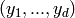 is the -th item from the
transitions sequence,
 is the -th item from the propensities sequence,
and
is the -th item from the propensities sequence,
and- 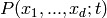 is the probability that the system is in the
state at time .
- 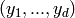 is the
Defining reaction propensity functions¶
The propensities parameter of the model must be a sequence of propensity
functions. Each propensity function f must return a non-negative
floating point value, when called as f(x_1, x_2, ..., x_d), where
the arguments x_1, x_2, ..., x_d are non-negative integers,
giving the coordinates of a state in the  -dimensional state space.
The propensity function f must also be well defined when the state space
coordinate arguments x_1, x_2, ..., x_d are numpy.array
objects of integers. In this case, the propensity function f must return a
value that is either a scalar, or a numpy.array object with the
same shape as the arguments x_1, x_2, ..., x_d. In either case,
the scalar or array object returned by f must consist of non-negative
floating point values.
-dimensional state space.
The propensity function f must also be well defined when the state space
coordinate arguments x_1, x_2, ..., x_d are numpy.array
objects of integers. In this case, the propensity function f must return a
value that is either a scalar, or a numpy.array object with the
same shape as the arguments x_1, x_2, ..., x_d. In either case,
the scalar or array object returned by f must consist of non-negative
floating point values.
A propensity function is often a single expression involving the input state space coordinates. It is simple to write such small, anonymous functions using the lambda keyword, especially when combined with Python’s argument list-unpacking syntax.
For example, suppose the chemical reaction 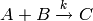, with kinetic parameter k = 1.5, has a propensity given by 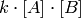, where 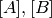 are the copy counts of the species A, B. We may define this function in Python, using the keyword lambda, as:
prop = lambda a, b : 1.5 * a * b
where the arguments a, b are used to pass the species counts . We may re-write the definition of prop, using list-unpacking syntax, as:
prop = lambda *x : 1.5 * x[0] * x[1]
The use of list-unpacking syntax in the above example is questionable, since there are only two arguments. However, it is a useful tool for defining propensity functions when the state space contains a large number of coordinates.
Defining reaction state transitions¶
The transitions parameter of the model must be a sequence of state
transitions. Assume that the chosen state space coordinate system for the
model has dimensions, that is, each propensity function in the
model’s propensities parameter is a function of arguments.
Then, each state transition in the sequence transitions must be a length
tuple of integers.
When the system is in the state specified by the non-negative integer
coordinates (x_1, ..., x_d), an occurance of the -th reaction
changes the state of the system to
(x_1 + y_1, ..., x_d + y_d), where (y_1, ..., y_d) is the -th
element of the model’s transitions parameter.
Optional model parameters¶
State space shape and initial state¶
CmePy solves the Chemical Master Equation for a model as a probability
distribution over the states 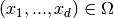, where
 , the state space, is the finite subset of 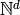
defined by
, the state space, is the finite subset of 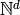
defined by
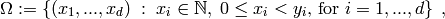
where 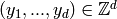 is a length- tuple
of integers. This tuple is the shape parameter of
the model.
If the shape parameter of the model is unspecified, the optional keyword argument domain_states must be passed to cmepy.solver.create() when creating the solver. See Sparse state spaces for more information.
The initial state of the system of reactions represented by a model m is specified by the optional parameter initial_state. If this parameter is unspecified, the optional keyword argument p_0 must be passed to cmepy.solver.create() when creating the solver. Refer to the cmepy.solver documentation for more details.
Species names and species counts¶
Models may include the optional parameters species
and species_counts. If specified, these parameters should be sequences
of the same length. The -th element of the species_counts
sequence must be a function mapping states from the state space to the states
of the i-th species count. The return value of this function must be
a non-negative integer. The -th element of the species sequence
defines the name of the i-th species.
Typically, the species and species_counts parameters are used to initialise a recorder instance, which may then be used to derive statistics for the species counts using solutions obtained from the solver. For more information, see the documentation for cmepy.recorder and cmepy.solver.
Model and reaction names¶
Models may include an optional name parameter, as a keyword argument to the function cmepy.model.create(). If given, this parameter should be a a brief description of the model.
Models may also include an optional reaction_names parameter as a keyword
argument to cmepy.model.create(). If specified, reaction_names
should be a sequence of the same length as the propensities and
transitions sequences. The -th element of the reaction_names
parameter defines the name of the -th reaction.